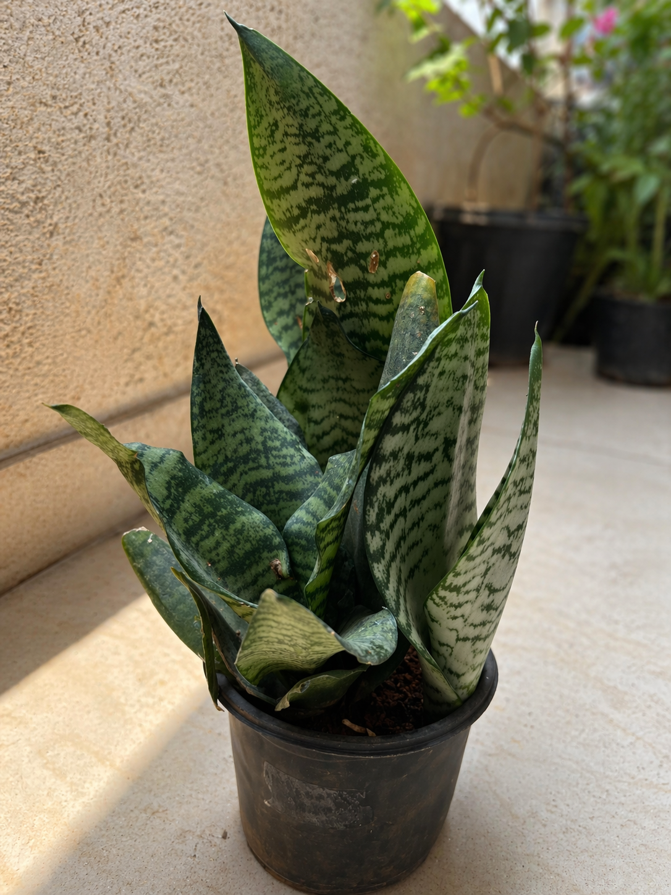

🌿 Snake Plant (Basic Info)
Common Name:Snake PlantScientific Name: Dracaena trifasciata
Other Names: Mother-in-Law’s Tongue
Family: Asparagaceae
Origin: West Africa
🌿Snake Plant Detailed Description
Scientific Name: Dracaena trifasciata
The Snake Plant is a hardy, evergreen indoor plant known for its tall, upright, sword-shaped leaves. The leaves are thick and stiff, with dark green color and light green stripes or yellow edges.
It is native to West Africa and can survive in different conditions, including low light and irregular watering. This makes it one of the easiest plants to grow.
Snake Plant grows slowly but can reach up to 2–4 feet indoors. It spreads through underground stems called rhizomes, which produce new shoots.
A special feature of this plant is that it releases oxygen at night, making it ideal for bedrooms. It also helps purify indoor air by removing harmful toxins.
Because of its strong nature and low maintenance needs, it is perfect for beginners and busy people.